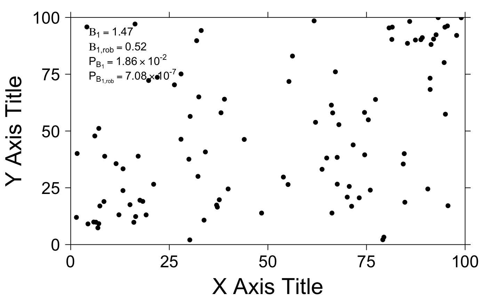

Correlation Key
get.corr.key.RdA function for adding correlation key legends to scatterplots.
Usage
get.corr.key(
x,
y,
label.items = c("spearman", "spearman.p"),
x.pos = 0.03,
y.pos = 0.97,
key.corner = NULL,
key.cex = 1,
key.title = NULL,
title.cex = 1,
alpha.background = 0,
num.decimals = 2,
border = 'white'
)Arguments
- x
A vector of values
- y
Another vector of values with the same length as x
- label.items
A vector of things to include in the key. Any combination of the following can be used. c("spearman","pearson","kendall","beta0", beta1,"spearman.p","pearson.p","kendall.p","beta1.p", "beta.robust", "beta.robust.p"). "all" is an alternative to the full list.
- x.pos
Horizontal position of the key corner
- y.pos
Vertical position of the key corner
- key.corner
The corner of the key defaults to the closest corner of the plot. This helps overcome some variable character and row sizing.
- key.cex
Specifies the size of font for the key, defaults to 1.
- key.title
The title of the key. Defaults to NULL
- title.cex
The size of the key title. Defaults to 1
- alpha.background
A value from 0 to 1 indicating the transparency of the legend box.
- num.decimals
Number of decimal places to keep for spearman, pearson and kendall correlations. Defaults to 2.
- border
Adds border around the key with the color specified, alpha background cannot be 0. Defaults to White.
Examples
# create some temporary data
tmp.data <- data.frame(
x = c(
runif(n = 15, min = 0, max = 20),
runif(n = 15, min = 80, max = 100),
runif(n = 70, min = 0, max = 100)
),
y = c(
runif(n = 15, min = 0, max = 20),
runif(n = 15, min = 80, max = 100),
runif(n = 70, min = 0, max = 100)
)
);
# a simple scatterplot with correlation key
BoutrosLab.plotting.general::create.scatterplot(
formula = y ~ x,
data = tmp.data,
# filename = tempfile(pattern = 'get.corr.key-scatterplot', fileext = '.tiff'),
xlab.label = 'X Axis Title',
ylab.label = 'Y Axis Title',
xlimits = c(0,100),
ylimits = c(0,100),
xat = seq(0,100,25),
yat = seq(0,100,25),
add.axes = FALSE,
key = BoutrosLab.plotting.general::get.corr.key(
tmp.data$y,
tmp.data$x,
label.items = c('spearman', 'spearman.p', 'kendall', 'beta1', 'beta1.p')
)
);
# \donttest{
# compare beta1 vs a robust estimate of the slope
# add an outlier
tmp.data <- rbind(tmp.data, c(2000,100));
BoutrosLab.plotting.general::create.scatterplot(
formula = y ~ x,
data = tmp.data,
# filename = tempfile(pattern = 'get.corr.key.robust-scatterplot', fileext = '.tiff'),
xlab.label = 'X Axis Title',
ylab.label = 'Y Axis Title',
xlimits = c(0,100),
ylimits = c(0,100),
xat = seq(0,100,25),
yat = seq(0,100,25),
add.axes = FALSE,
key = BoutrosLab.plotting.general::get.corr.key(
tmp.data$y,
tmp.data$x,
label.items = c('beta1', 'beta1.robust','beta1.p','beta1.robust.p')
)
);

# see create.scatterplot for an example of creating multiple keys using legends
# }